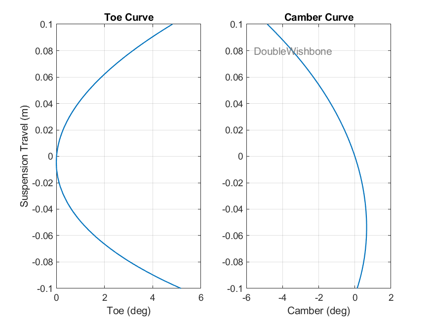
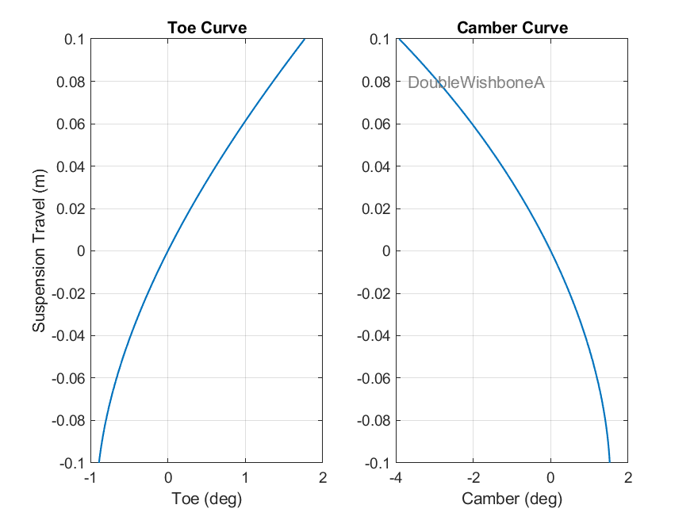
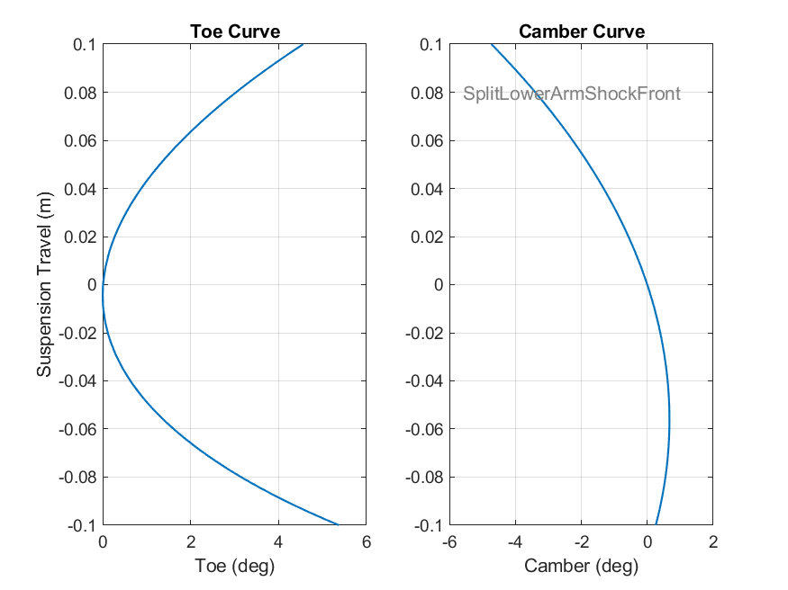
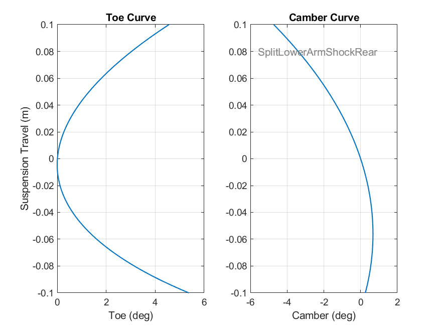
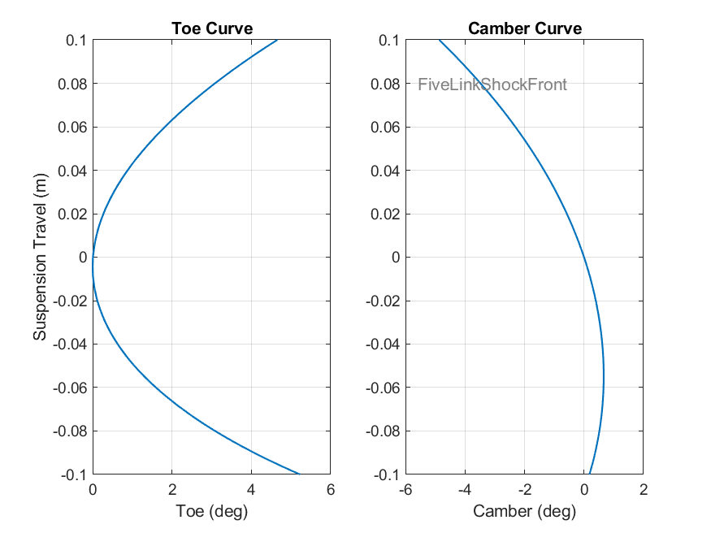
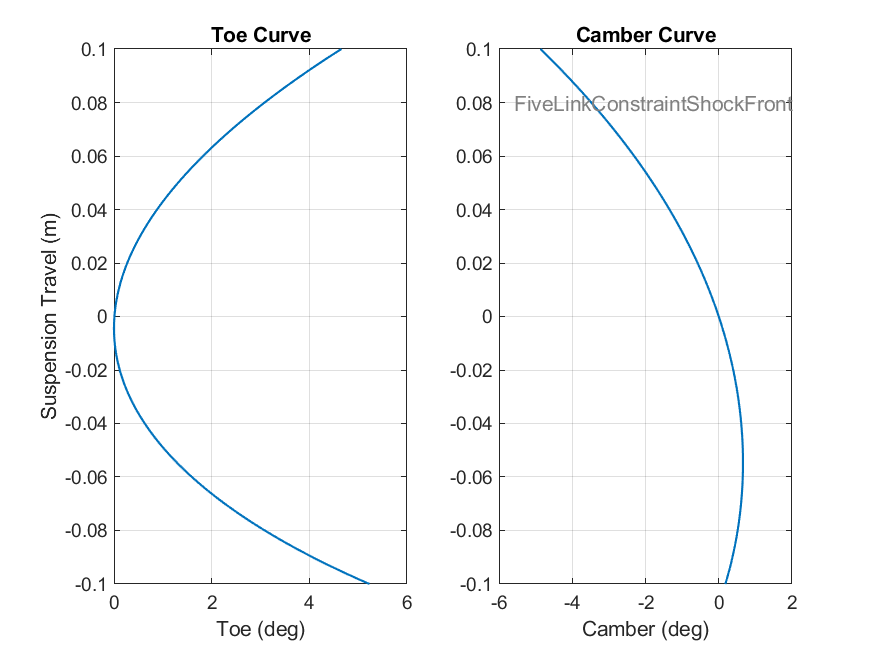
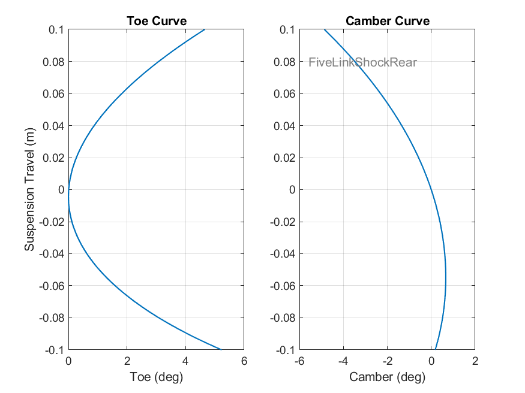
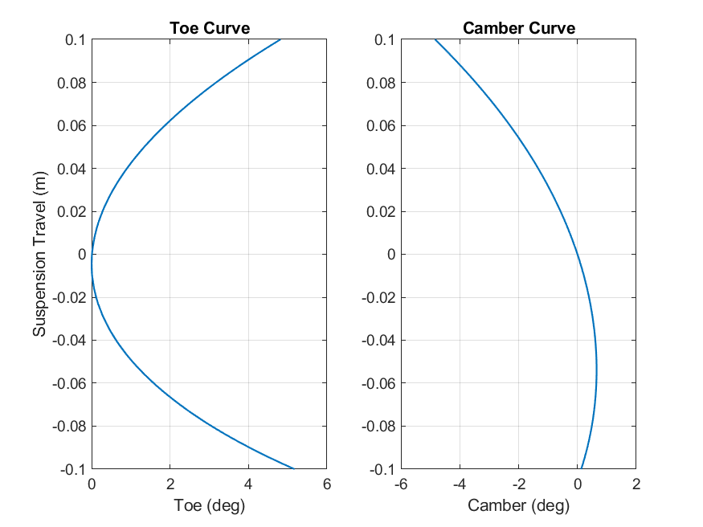
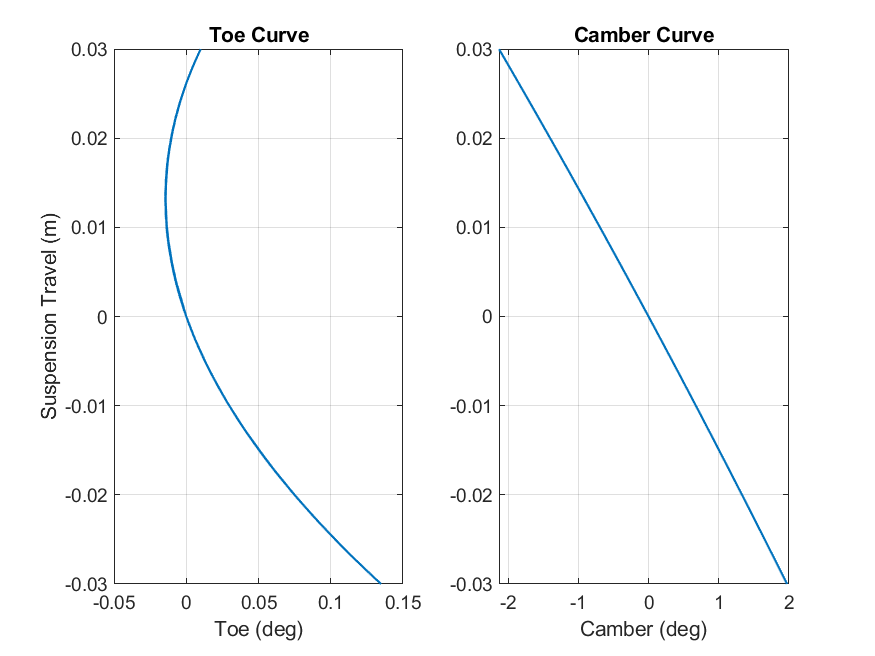

Simscape Vehicle Library, Toe Camber Curves
Copyright 2018-2024 The MathWorks™, Inc.Double Wishbone

TSuspMetrics =
7×4 table
Names Values Units Description
_____________ _______ _______ ____________________________
"Toe" 3.6426 "deg" "+Toe In"
"Camber" -3.8637 "deg" "+Top Out"
"Caster" 15.329 "deg" "+Top Rear of WC"
"KPI" 1.4744 "deg" "+Top Inside Bottom"
"Bump Steer" 4.3282 "deg/m" "+/- 10mm, +Toe In"
"Bump Camber" 4.3282 "deg/m" "+/- 10mm, +Top Out"
"Bump Caster" 22.156 "deg/m" "+/- 10mm, +Caster Decrease"
Double Wishbone, Design A

Split Lower Arm, Shock to Front

TSuspMetrics =
7×4 table
Names Values Units Description
_____________ _______ _______ ____________________________
"Toe" 3.6872 "deg" "+Toe In"
"Camber" -3.9755 "deg" "+Top Out"
"Caster" 14.846 "deg" "+Top Rear of WC"
"KPI" 8.0896 "deg" "+Top Inside Bottom"
"Bump Steer" 4.2599 "deg/m" "+/- 10mm, +Toe In"
"Bump Camber" 4.2599 "deg/m" "+/- 10mm, +Top Out"
"Bump Caster" 29.571 "deg/m" "+/- 10mm, +Caster Decrease"
Split Lower Arm, Shock to Rear

TSuspMetrics =
7×4 table
Names Values Units Description
_____________ _______ _______ ____________________________
"Toe" 4.9694 "deg" "+Toe In"
"Camber" 0.31538 "deg" "+Top Out"
"Caster" 14.846 "deg" "+Top Rear of WC"
"KPI" 8.0896 "deg" "+Top Inside Bottom"
"Bump Steer" 4.198 "deg/m" "+/- 10mm, +Toe In"
"Bump Camber" 4.198 "deg/m" "+/- 10mm, +Top Out"
"Bump Caster" 29.571 "deg/m" "+/- 10mm, +Caster Decrease"
Five Link, Shock to Front

TSuspMetrics =
7×4 table
Names Values Units Description
_____________ _______ _______ ____________________________
"Toe" 3.6259 "deg" "+Toe In"
"Camber" -3.9685 "deg" "+Top Out"
"Caster" 15.84 "deg" "+Top Rear of WC"
"KPI" 2.7472 "deg" "+Top Inside Bottom"
"Bump Steer" 4.066 "deg/m" "+/- 10mm, +Toe In"
"Bump Camber" 4.066 "deg/m" "+/- 10mm, +Top Out"
"Bump Caster" 28.373 "deg/m" "+/- 10mm, +Caster Decrease"
Five Link Constraint, Shock to Front

TSuspMetrics =
7×4 table
Names Values Units Description
_____________ _______ _______ ____________________________
"Toe" 4.1235 "deg" "+Toe In"
"Camber" -4.4063 "deg" "+Top Out"
"Caster" 15.84 "deg" "+Top Rear of WC"
"KPI" 2.7472 "deg" "+Top Inside Bottom"
"Bump Steer" 4.064 "deg/m" "+/- 10mm, +Toe In"
"Bump Camber" 4.064 "deg/m" "+/- 10mm, +Top Out"
"Bump Caster" 28.373 "deg/m" "+/- 10mm, +Caster Decrease"
Five Link, Shock to Rear

TSuspMetrics =
7×4 table
Names Values Units Description
_____________ _______ _______ ____________________________
"Toe" 4.4913 "deg" "+Toe In"
"Camber" -4.7269 "deg" "+Top Out"
"Caster" 15.84 "deg" "+Top Rear of WC"
"KPI" 2.7472 "deg" "+Top Inside Bottom"
"Bump Steer" 4.1095 "deg/m" "+/- 10mm, +Toe In"
"Bump Camber" 4.1095 "deg/m" "+/- 10mm, +Top Out"
"Bump Caster" 28.373 "deg/m" "+/- 10mm, +Caster Decrease"
Double Wishbone, Pullrod

Double Wishbone, Pullrod, No Steer
